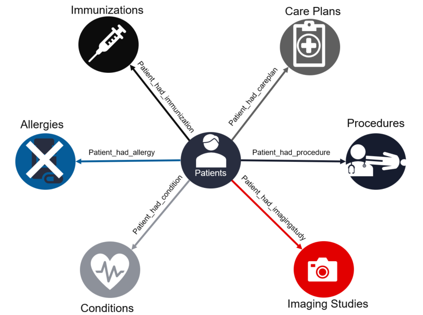
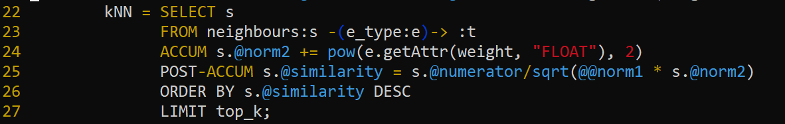
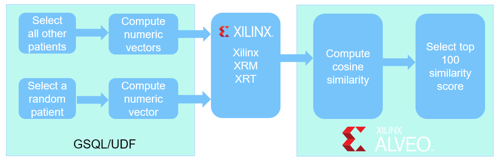
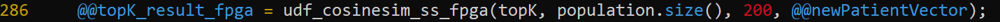
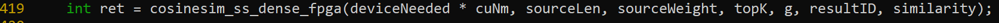
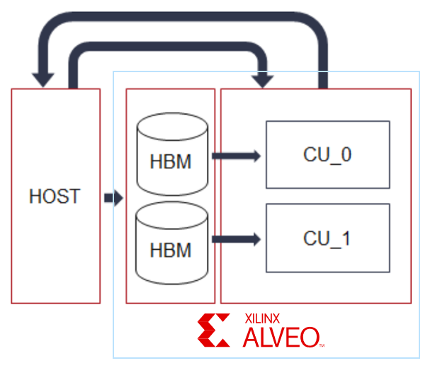
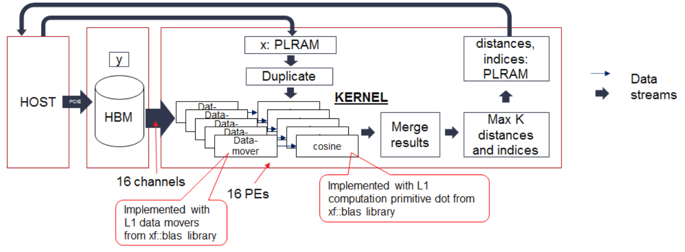

Xilinx Alveo Graph Analytics Products¶
High Level Architecture¶
General use cases¶
Synthea use case¶
Health and medical professionals are required to make predictions for diagnosis and prognosis in various medical problems. Individualized predictive analytics based on patient similarity is becoming popular in this field to identify similar patients to an index patient, derive insights from the records of the similar patients, and provide personalized predictions. Studies have shown that Consine similarity metrics can outperform conventional predictive modeling in which all available patient data are analyzed. The improved prediction performance is achieved at the cost of increased computational burden.
Xilinx Graph Analytics library optimized for Alveo Adaptable Accelerator Cards has been demonstrated on Synthea generated patient data to greatly reduce that computational burden and provide predication results for patients more rapidly. Synthea<sup>TM</sup> is an open-source, synthetic patient generator that models the medical history of synthetic patients and provides high-quality, synthetic, realistic but not real, patient data and associated health records covering every aspect of healthcare.
Product recommendation¶
Healthcare¶
Helpdesk¶
Log file errors¶
Security¶
Xilinx Vitis Graph Analytics Acceleration Library Plugin for TigerGraph¶
Xilinx Vitis Graph Analytics Acceleration Libray is seamlessly integrated with TigerGraph as a plugin. The low level hardware details are transparent to TigerGraph users.
The plugin consists of two major components as shown in the block diagram below:
Xilinx Vitis Graph Analytics Library is provided as custom TigerGraph User Defined Function(UDF) that can be called directly from GSQL.
Xilinx Resource Manager (XRM) and Xilinx Run Time (XRT) libraries are installed on all processing nodes to manage resource allocation on Alveo Acceleration cards and data movement between the CPU and the FPGA.
{kind=link}
Cosine similarity¶
Cosine similarity is a measure of similarity between two non-zero vectors of an inner product space:

In TigerGraph patients information and medical history are represented as vertices and edges in a graph database as shown below:
{kind=link}
Each attribute (e.g. age, gender, race, immunization, etc) of a patient is mapped to a numerical value and becomes a feature of the patient vector. In our PoC design each paitent vector consists of 198 features and each feature is stored as a 32-bit integer. Consine similarity is calcualted between the index patient vector and all other patient vectors. The results are then sorted and the top 100 patients with highest scores are presented. Below are the details of the feature map:
Feature (INT) |
Descriptions |
|---|---|
0 |
Norm |
1-2 |
64-bit patient VID |
3 |
age |
4 |
gender |
5 |
race |
6 |
ethnicity |
7-19 |
reserved |
20-39 |
immunization map |
40-59 |
allergy map |
60-109 |
conditions map |
110-139 |
imaging studies map |
140-189 |
procedures map |
190-209 |
careplans map |
Cosine similarity GSQL¶
TigerGraph uses GSQL query language for fast and scalable graph operations and analytics. A GSQL script of patient similarity using cosine similarity is created to baseline the functionalities and computation complexity of the algorithm. It is used to verify and validate the functional correctness and performance improvement of the Alveo accelerated desgin. Below is the block diagram of cosine similarity computation in GSQL, which is executed entirely on CPU.

Below is the code snippet of cosine similarity in GSQL.
{kind=link}
FPGA Accelerated cosine similarity function¶
Xilinx Vitis Graph Analytics Library plugin provides a user defined function that offloads the computation of cosine simimarity and the top K highest scores to the FPGA:
{kind=link}
The accelerated cosine simlarity UDF consists of two parts:
Host code: C++ code that runs on the CPU to manage resource allocation and data movement between the CPU and the FPGA
Kernel: custom computation hardware logic that utilizes massive parallel processing horsepwer and abundant on-chip memory on FPGA. Each kernel contains two compute units(CUs) running in parallel with each CU connecting to one HBM stack that stores patients’ records.
Below is the code snippet of cosine similarity accelerated on Alveo card using Tigergraph UDF.
  {kind=link}
{kind=link}
{kind=link}
The kernel design for each CU is illustrated in the block diagram below. Each CU contains 16 fully pipelined cosine similarity processing elements (PEs) and one MaxK components to choose the top similarities. The 16 PEs are connected to 16 channels to access 5M patients’ data in parallel. The incoming new patient’s record is transmitted to the FPGA’s PLRAM by the host and then duplicated to 16 PEs. The MaxK primitive calculates the top cosine similarities and their corresponding indices and writes them to the PLRAM, which is read out by the host. In the end, the host will do a simple computation to extract the final top similarities from the top similarity sets computed by the two CUs.
{kind=link}
Run Cosine Similarity on Alveo U50 Card¶
The Xilinx® Alveo™ U50 Data Center accelerator cards provide optimized acceleration for workloads in financial computing, machine learning, computational storage, and data search and analytics. Alveo U50 is designed for deployment in any server with the following features:
Built on Xilinx UltraScale+ architecture
Efficient 75-watt, small form factor
100 Gbps networking I/O
PCIe Gen4
HBM
Xilinx has demonstrated 400x acceleration of cosine simlarity running on Alveo U50 cards comparing to a server with 128 CPU cores and 256GB RAM. A demo utilizing Xilinx TigerGraph plugin with Alveo U50 acceleration card is included in this repository to show the general usage of the plugin and the development flow of custom graph algorithm accelerators on Xilinx Alveo cards in TigerGraph. Please Check [Running Alveo Demo](docs/running_demo.md) for detailed instructions on how to run the demo on premise.
License¶
Licensed using the [Apache 2.0 license](https://www.apache.org/licenses/LICENSE-2.0).
Copyright 2020-2021 Xilinx, Inc.
Licensed under the Apache License, Version 2.0 (the “License”); you may not use this file except in compliance with the License. You may obtain a copy of the License at
Unless required by applicable law or agreed to in writing, software distributed under the License is distributed on an “AS IS” BASIS, WITHOUT WARRANTIES OR CONDITIONS OF ANY KIND, either express or implied. See the License for the specific language governing permissions and limitations under the License. Copyright 2020-2021 Xilinx, Inc.
Trademark Notice¶
Xilinx, the Xilinx logo, Artix, ISE, Kintex, Spartan, Virtex, Zynq, and other designated brands included herein are trademarks of Xilinx in the United States and other countries.
All other trademarks are the property of their respective owners.
Running Alveo Demo
Integrate with TigerGraph
Vitis Development Flow